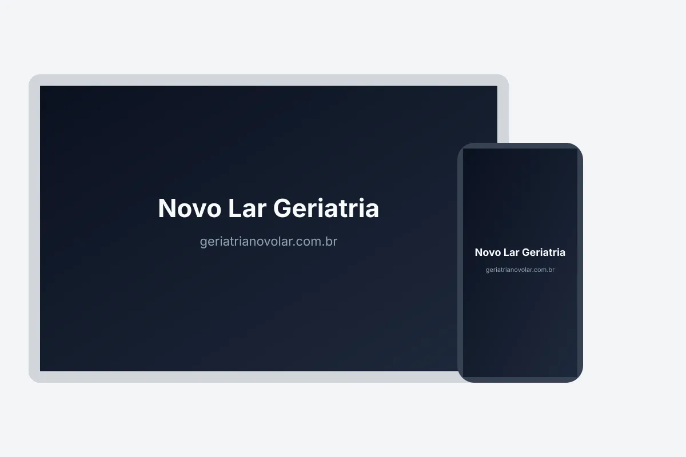

Visão geral
Uma clínica geriátrica precisava de presença online. A entrega foi um site institucional publicado em domínio próprio.

Uma clínica geriátrica precisava de presença online. A entrega foi um site institucional publicado em domínio próprio.